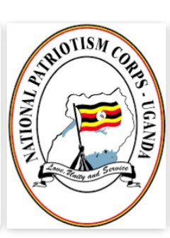

NATIONAL PATRIOTISM CORPS-UGANDA (NPC)
Timothy Kalyegira writes about who Amin was and how different people described him: – To most people, Amin was a buffoon, a grown man in his 40s and 50s who spoke with the immature thoughts and incoherence of a child, who could not speak proper English and probably had the IQ of an imbecile.
Because of this image of a buffoonish Amin, Ugandans have never taken the trouble to listen to what he had to say about the killings that took place under his rule.
Before I explain what Amin himself said about the killings, we need to clear this bias against him by giving some background to what some serious international observers thought about him.
In an article in April 1975 in the Nairobi news magazine, the Weekly Review, founded and edited by the journalist Hillary Ng’weno, Amin’s way with world leaders was analyzed. The article titled “A friend of the Arabs”, observed:
“It is true that General Amin is a Muslim, and as such stands a better chance of getting a sympathetic hearing in Arab financial councils than non-Muslim African leaders. But that is not sufficient to explain Gen Amin’s remarkable support with leaders of the Arab world. A better view is to be found in Amin’s own brand of diplomacy, especially his ability to capitalise on the Arab-Israeli conflict.”
During the hostage crisis at Entebbe airport in June 1976, Amin’s bitter enemies, the Israeli intelligence agency Mossad (please note that Amin had fallen out bitterly with Israeli in 1972) wrote a psychological profile of him in order to better understand the leader they were dealing with during these tense days.
The profile, reproduced in William Stevenson’s 1976 book 90 Minutes at Entebbe, read as follows: “…The hijacking is the most important historic opportunity for him. The whole world is writing about Uganda and about Amin, its president.
Important governments negotiate with him, diplomatic messages go back and forth…He is applauded by the hostages and he orders them food and drinks, blankets and sheets…Idi Amin Dada’s mother loved the Bible. In her will she ordered her son to honor the Jewish people…There is no doubt he has the gift of leadership; his control of his soldiers most of them from his northern tribes comes largely from his tall stature, his great physical strength…and his Fuhrerlike rhetoric.”
If the respected Weekly Review of Nairobi could publish a reasoned, realistic profile of Amin’s international influence in 1975, why do Ugandans remain ignorant of their former leader?
And if one of the world’s most effective intelligence agencies Mossad — ran by men and women twenty times better educated, more sophisticated, more analytical and internationally traveled than Uganda’s “middle class” could write a psychological profile of Amin in 1976 that depicted him as a thinking, influential man with a sound mind and a definite set of foreign and military policies (and yet in 1976 Amin being Israeli’s enemy, Mossad would ordinarily have sought to paint him as negatively as possible), why does the petty-minded Ugandan “elite”, who neither read nor write nor think, persist in viewing Amin as a silly imbecile?
If Amin’s mother taught him to “honour the Jewish people”, as Mossad itself noted in its intelligence report in June 1976, and the Jewish hostages at Entebbe “applauded” Amin, and an economist called Ilan Hartuv, a son to the elderly hostage Doris (“Dora”) Bloch, acted as Amin’s translator at Entebbe, why do we keep on thinking that Amin ordered Dora Bloch’s murder?
Or if he ordered Bloch’s murder, why did the Israeli government, after their raid and her disappearance, remain unusually quiet and not pursue the matter of the murder of a Jew in the way we know Israelis to do historically? Why did they never attempt to kidnap Amin from Saudi Arabia or call for him to be brought to stand trial for her murder?
In a March 1, 2009 article in the Daily Monitor, Fred Guweddeko mentioned a former State Research Bureau agent, Mohammad Kabugo, as being the man who confessed to murdering Bloch. This is a sensational statement, if true. And yet for a month and a half since Kabugo’s confession was published, we barely hear a word from Israel asking that Kabugo be flown to Tel-Aviv to stand trial for the murder. Why?
To repeat the running theme of this series, if we are going to understand the truth about Ugandan history, we are going to have to start addressing the question of who Amin was and what he himself said about his rule.
Amin’s personal doctor, Prof. John William Kibukamusoke, was the author of 31 publications. To this day, one of President Museveni’s senior presidential pilots, some of the consultants in Museveni’s personal security detail, and many of the technicians at the Entebbe Airforce base, are from the Amin era.
If Amin liked to surround himself with such highly skilled and competent people from the start of his rule right until the end, why would he be the same man to cause hundreds of other Ugandan professionals to flee into exile?
The explanation given by Amin himself about the killings under his rule should help solve the puzzle of the rampant and brutal killings that went on all through 1979 long after Amin and his security apparatus were out of power and had no capacity to cause havoc